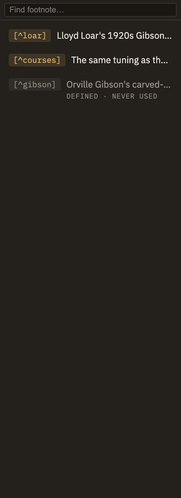

Docs/Right sidebar/Footnotes
Footnotes
The Footnotes panel gathers every footnote in the note you're reading into one tidy list, so you can see them at a glance and jump straight to where each one is used. It also quietly flags footnotes that have drifted out of sync.
Want to know how to write footnotes in the first place — the markup, how they look, and clicking to jump between a note and its footnote? See Notes → Footnotes. This page is about the panel itself.
Reading the panel
Each row shows a footnote's label and a one-line preview of its text, listed in the order they appear in your note. Start typing in the search box at the top to narrow the list to footnotes whose label or text matches — the results update as you type, and only this note is searched.
Click a row to jump to where that footnote is used in your note, so you can pick up right where it belongs.
Footnotes that have drifted
The panel also catches the two ways a footnote can fall out of sync, each shown as its own row with a small note underneath:

When there's nothing to show
If a note has no footnotes, the panel simply says "No footnotes." If it has footnotes but none match what you've typed, it says "No matches" instead — so you can always tell whether the note is empty or your search is just too narrow.